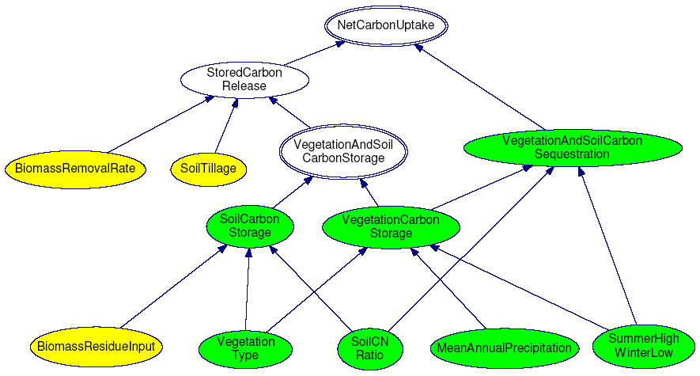

Case Study: Franklin County, Vermont
At a glance
Primary Partner: University of Vermont
Primary Researcher: Samuel M. Gorton
Completed: May 2010
Models: Carbon Sequestration
Practical application
A preliminary BNN model of carbon
uptake was developed to assess the CSS potential of the
mixed agricultural landscape of Franklin County. Spatial
data for soil and climate conditions and vegetation
characteristics was coupled with prior information on land
management techniques to quantify stocks and flows in
terrestrial carbon pools. In addition to describing existing
CSS activities, this model could also be applied to
understanding how different human land management activities
might affect carbon uptake. It is important to note that any
human management activities that seek to enhance carbon
sequestration potential of landscapes must be weighed
against the lifecycle carbon emissions of that management
activity. If through application of novel BNN models, rural
agricultural landscapes can be shown to provide substantial
carbon uptake potential, this provides motivation for the
development of multifunctional agricultural landscapes. Such
landscapes might simultaneously sequester carbon (and
nutrients) while providing food and energy products for
market, demonstrating the role that human managed landscapes
play in supplying economic and ecological goods and
services.

In the northeastern United States, several farmers
practicing holistic land management techniques for CSS have
formed Carbon Farmers of America, LLC which maintains an
internet-based marketplace to sell unregulated carbon credits .
While this represents a new opportunity for farmers, such an
approach may not be charging the actual end users of farm-based
ecosystem services. Furthermore, if farms are providing
specific, marketable ES like carbon sequestration, their
efforts, if appropriately assured, could be exchanged through
payment for ecosystem services (PES) programs such as the
Regional Greenhouse Gas Initiative (RGGI), offering northeastern
states important revenues to subsidize and encourage farm-based
ES provisioning. The goal of this project was to develop a
Bayesian Belief Network (BBN) model to quantify the carbon
sequestration and storage value of the agricultural landscape of
Franklin County, Vermont.

The ARIES Team applied the BNN model for carbon sequestration and storage in mixed (croplands, grasslands, wetlands and forests) agricultural landscapes to Franklin County, Vermont. Green nodes represent layers for which spatial (GIS) datasets exist, yellow nodes are based on prior information about land management practices, white nodes are intermediate nodes which are dependent upon data from parent nodes.
StepsFollowing the ES modeling example given in Marcot et. al., a “causal web” of factors affecting net carbon uptake in Franklin County soils and vegetation was developed. Factors for calculating carbon sequestration provision were derived from a literature review and from available GIS data for climatic conditions, soil conditions and vegetative cover. The result is a first draft of a CSS model for Franklin County that would benefit from expert input and could be used as a starting point to a larger research project.Past spatial ecosystem service models of terrestrial (i.e. within vegetation and soils) carbon sequestration have focused on forest biomass carbon uptake. However, several researchers have noted the potential for diverse, holistically managed agricultural landscapes to sequester carbon in vegetative biomass as well as soils. Farms of the northeastern United States are diverse landscapes incorporating row crops, grasslands, wetlands and woodlots, which might be managed for both soil and vegetative carbon sequestration. This research seeks to quantify the role that these diverse farm landscapes can play in terrestrial carbon sequestration through the application of BNN models. |